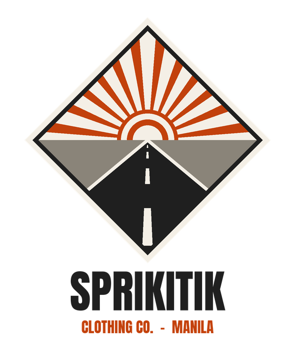

New drop!
Wear the street. Wear Manila.
Limited drop tees, hoodies, caps and tote bags inspired by everyday Filipino street life.
Shop NowAbout Sprikitik

Sprikitik Clothing Co. was started by three friends from Manila who love street culture, jeepneys and old neighborhood signs. The name comes from the Filipino word for road.
Everything we sell is made by local printers and tailors, and every drop is small on purpose. Pay with GCash, Maya or cash on delivery.
Why shop with us
Easy Online Shop
See all our products, prices and sizes in one place. Pay with GCash, Maya or cash on delivery.
Lookbook
See how our clothes look when worn around Maile, plus photos from our customers.
Size Guide
Check our size chard in centimeters so your order fits the first time.